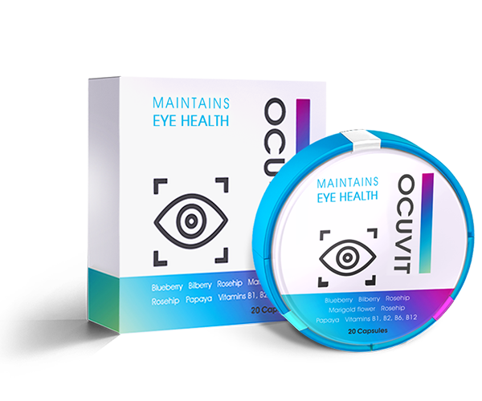

Patru moduri de vedere slabă pot afecta învățarea la copii
Să recapete vederea 100% și nu să orbească
Problema acuității vizuale astăzi devine una dintre cele mai relevante pentru persoanele de toate vârstele. Este posibil să se întoarcă vederea și să-și ia rămas bun de la ochelari pentru totdeauna? Este adevărat că după operația la ochi există o șansă de a orbi? Ambele lucruri sunt adevărate. Să vedem cum să ne întoarcem vederea fără consecințe ireversibile.

Vederea bună este importantă
Ochii sunt un organ care are nevoie de îngrijire nu mai puțin decât alții. Dacă nu le aveți grijă, cu timpul situația se va înrăutăți: vederea va scădea mai mult, bolile oculare vor începe să se dezvolte.
Dacă recurgeți la utilizarea lentilelor de contact sau a ochelarilor, cu timpul, situația se va agrava în mod inevitabil. Motivul la aceasta este slăbirea mușchilor oculari. Purtarea ochelarilor sau a altor mijloace ajutătoare relaxează și mai mult musculatura deja slăbită.
Vederea scade - grosimea ocularelor crește și așa mai departe an după an, dacă nu recurgeți la un tratament complet.

Cum să-și recâștige vederea
Printre modalitățile existente de recuperare a vederii, luăm în considerare cele care garantează un rezultat de 100%. Există doar două dintre ele - corectarea cu laser și administrarea medicamentelor corespunzătoare.
Corecția cu laser este rapidă, în 80 de cazuri din 100 o modalitate eficientă, dar costisitoare și nu întotdeauna sigură de a obține o imagine clară.
Din păcate, chiar și chirurgii experimentați nu oferă o garanție absolută că, după operație, în loc să restabiliți vederea, nu o veți pierde deloc.
Calitatea și durata de viață a echipamentului cu laser, experiența medicului, diagnosticul inexact și chiar o caracteristică mică a corpului pot afecta negativ rezultatul operației.


Administrarea medicamentelor pentru restabilirea tonusului musculaturii oculare se referă la o metodă puțin mai lungă, dar absolut sigură de restabilire a vederii. Cum vedem această lume depinde de starea acesteia
Astăzi, în Europa există un medicament care a trecut studiile clinice și a demonstrat eficacitatea în practică - .
Acesta include cantitatea maximă admisă de substanțe tonice pe bază de plante, fiecare având ca scop eliminarea bolilor oculare, prevenirea orbirii și restabilirea vederii clare.

Într-un an de existență, medicamentul a permis mai mult de 100 de mii de oameni să-și scoată ochelarii și să renunțe la lentile de contact pentru totdeauna.
Dezvoltarea sa a durat mai mult de 10 ani. Oamenii de știință au petrecut încă 4 ani pentru a efectua experimente clinice.
Eficacitatea imensă a medicamentului se datorează unei compoziții care nu are analogi, care include extracte de rauvolfia, shikshi, struguri de mare și ulei de rechin.
O metodă de extracție a apei reci a jucat un rol important în crearea capsulelor, care a permis păstrarea în întregime a compoziției biochimice a vitaminelor.
Substanțele active ale medicamentului sunt capabile să ridice nivelul de vitamine necesare vederii la momentul de stare bună în 2-4 săptămâni. În acest timp, echilibrul oligoelementelor responsabile de acuitatea vizuală se aliniază.
Aceasta duce la stabilizarea naturală a presiunii oculare și, de asemenea, tonifică mușchii ochiului, întărește retina și aliniază vederea la unitate.
Unde să cumpere
Producătorul medicamentului intenționează să renunțe la comercializarea -ului prin intermediul rețelelor farmaceutice pentru a preveni falsificarea produsului. poate fi achiziționat exclusiv pe site-ul producătorului, unde până la 30.04.2020 există o reducere de 50%.
Dacă întâlniți într-o farmacie, vă rugăm să o raportați prin telefon la linia fierbinte de pe site-ul producătorului. Aveți grijă de vedere dvs.
Uh ... Recent l-am văzut la farmacie.…
Acesta este un fals, spuneți adresa farmaciei prin numărul de pe site. Mi-a prins, de asemenea, chiar am cumpărat, am băut întregul curs, n-ar fi avut niciun sens. Am sunat la linia fierbinte să mă plâng și mi-am dat seama că a fost vina mea. După șase luni am luat originalul și apoi mi-am dat seama care este diferența. Cu adevărat mi-am recăpătat complet vederea!
Mi s-a pus diagnosticul o dezlipire de retină. Mi-a fost foarte înfricoșător. Desigur, medicii au propus operație în primul rând. Am renunțat spre fericirea mea. Am luat cursul de și nu a fost necesară nici o operație.
E destul de incredibil. Chiar așa funcționează?
Eu însumi și mulți dintre prietenii mei am băut acest medicament. Cu toată responsabilitatea, pot spune că lucrează pentru 100%
Am luat timp de o săptămână și vederea s-a îmbunătățit cu o unitate!
Articolul este actual acum, toată lumea lucrează la calculatoare. Trebuie să aveți grijă de vedere.
De asemenea, vreau să las un comentariu. Am fost îngrijorat de hipermetropia de vârstă, au existat suspiciuni de dezvoltare a cataractei. Nu poate depăși frica de operație: am auzit multe despre complicațiile severe. Medicamentul a ajutat la îmbunătățirea semnificativă a vederii și la eliminarea amenințării cataractei într-un singur curs.
Cunosc personal persoanele care au suferit o intervenție chirurgicală la ochi. Anterior, eu însumi am economisit pentru corecția cu laser, apoi am decis că nu-mi pot asuma un astfel de risc, totuși sunt ochii ... Am comandat , sper că va ajuta.
Vă va ajuta, nu vă îndoiți. Principalul lucru este să urmați instrucțiunile specialistului (veți fi consultat înainte de expediere). Sunt un exemplu viu al faptului că vederea poate fi returnată fără intervenții chirurgicale!! Nu pot să vă spun cât de fericită sunt să văd o imagine clară, să nu mă mai chiorăsc și să arunc acele ochelari în cele din urmă!